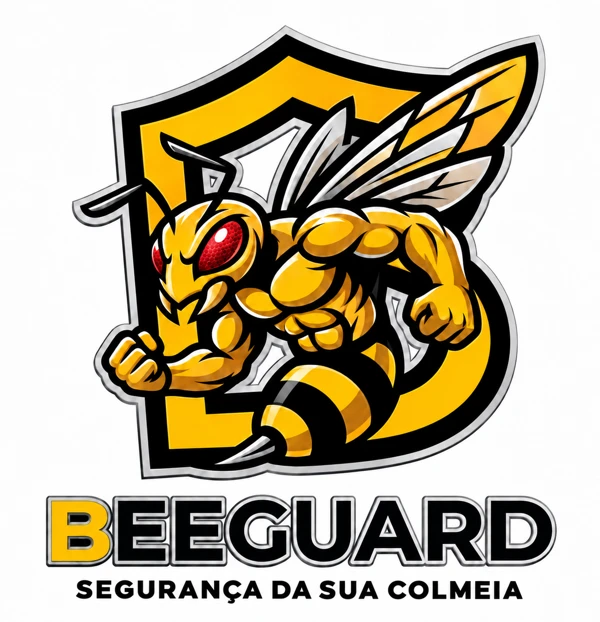

Como funciona
1. Escaneie o QR Code do rastreador e cadastre a caixa e os telefones.
2. Teste a comunicação, o alerta (e a balança, se tiver) e leve a caixa ao apiário.
3. Se a caixa for mexida, você recebe um SMS com um link para responder. Sem resposta em 5 minutos,
o contato secundário é avisado e o rastreamento intensivo começa.
Rastreador antifurto para colmeias
O Bee Guard é um rastreador com GPS e chip de celular instalado dentro da caixa de abelhas. Ele protege o apiário contra o roubo de colmeias e ajuda o apicultor a acompanhar a produção de mel.
- Alerta por SMS assim que a caixa é mexida, com a hora e o link do mapa.
- Localização no mapa e rastreamento a cada minuto em caso de roubo.
- Ataque ao apiário: se várias caixas forem mexidas juntas, todos os contatos são avisados na hora.
- Cerca virtual: aviso se a caixa sair do local do apiário.
- Balança para colmeia: peso, hora da colheita, falta de alimento e enxameação.
- Produção de mel por apiário e por colmeia, com link para compartilhar.
Dúvidas ou orçamento: WhatsApp (41) 99676-7045.